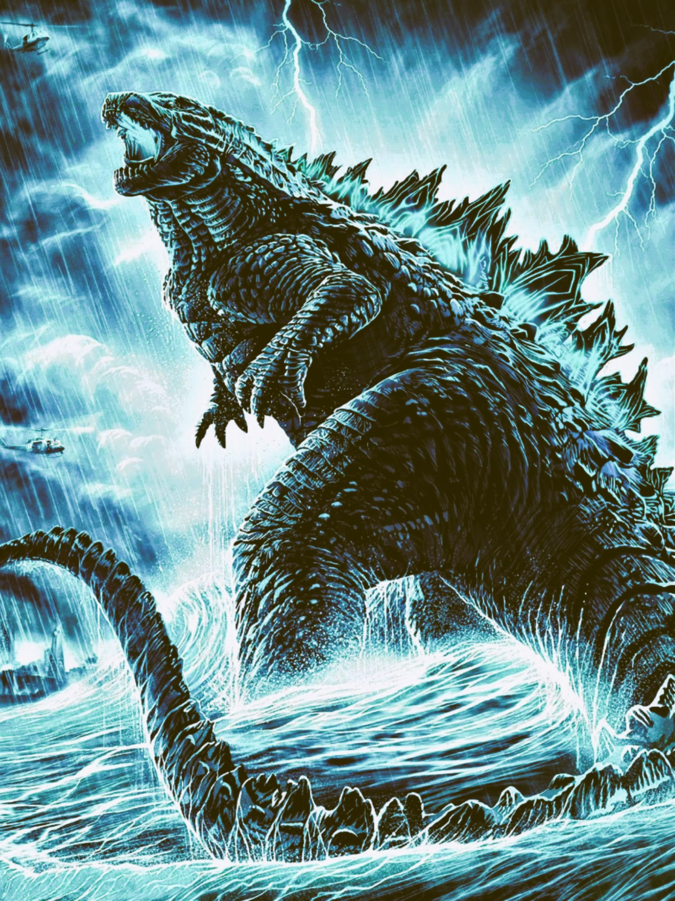

kaiju
Godzilla
Japan
Godzilla is a fictional giant monster that first appeared in the 1954 Japanese film "Gojira" and has since become one of the most iconic kaiju (Japanese giant monsters) in popular culture. The character has been featured in numerous films, television series, and other media.
Godzilla is a fictional giant monster or kaiju that originated from Japanese cinema. The character first appeared in the 1954 film "Gojira," directed by Ishirō Honda. Godzilla has since become an iconic figure in popular culture and has appeared in numerous films, television series, and other media.
Location of Godzilla fossils.